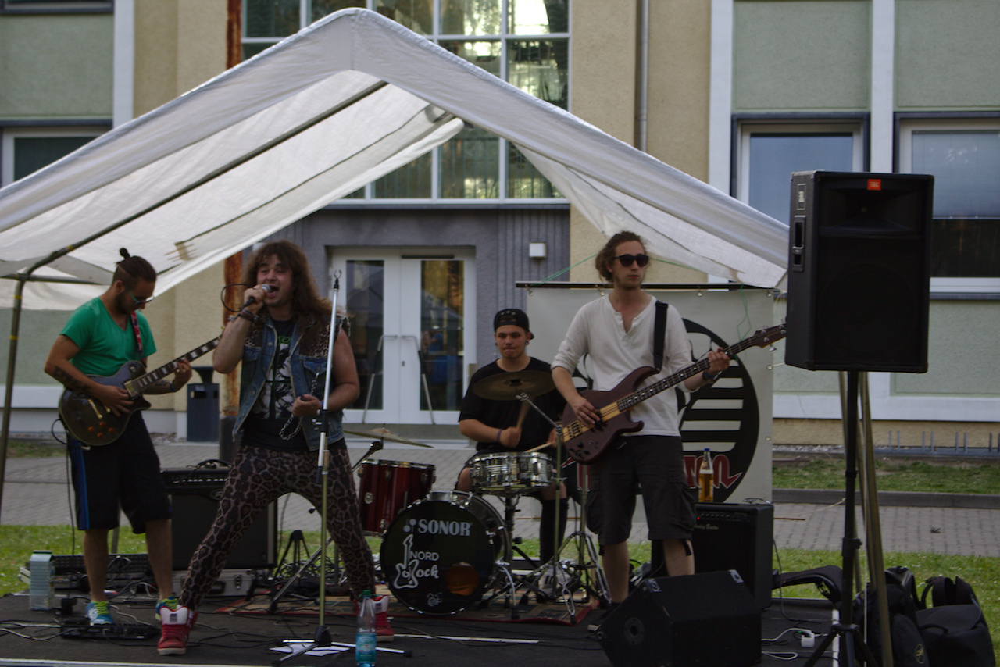

Your browser doesn't support the features required by impress.js, so you are presented with a simplified version of this presentation.
For the best experience please use the latest Chrome, Safari or Firefox browser.
Fachschaftsrat Elektrotechnik
Einführungswoche 2015
Universität Rostock
Was ist die Fachschaft?
Gesamtheit aller Studierenden eines Fachbereiches
Studiengänge
- Elektrotechnik
- Informationstechnik/ Technische Informatik
- Computational Science an Engineering
- Electical Engineering
Was ist Mentoring?
- Unterstützung bei: Studienorganisation, Einleben am Studienstandort, Hilfe bei Fragen und Problemen im Bezug auf das Studium
- Mentoren sind Studenten aus den höheren Semestern
- Teilnahme ist freiwillig
Nutzen des Mentoring
- Erleichterung des Übergangs von der Schule oder Arbeit ins Studium
- Kontakte zu Studenten höherer Semester knüpfen
- akute Probleme können über die Mentoren an die Lehrkräfte weitergeleitet werden
Inhalte des Mentoring
- Fragen rund ums Studium
- Vorstellung der wichtigsten Online-Plattformen
- Tipps zu Hausaufgaben und Lernstrategien
- Zeitmanagement und Selbstorganisation
- Hinweise zu den Prüfungen
Die genauen Inhalte bestimmt ihr!!!
Organisation des Mentoring
- 4 Gruppen mit je 2 Mentoren
- Häufigkeit der Treffen und Termine werden in den Gruppen bestimmt
- Kennenlernen der Mentoren nachher beim Grillen
- Eintragung in die Gruppen beim ersten Treffen am Donnerstag
Ablauf der Erstie-Woche
Montag, 05.10.2015
11:00 - 12:00 Uhr:
Begrüßung durch den Fachschaftsrat und Vorstellung des Mentoring
Danach:
gemeinsames Grillen mit dem Fachschaftsrat (Freibier!!!)
Dienstag, 06.10.2015
Ab 9 Uhr:
zentraler Campustag auf dem Ulmencampus, Beratung durch den FSR im Raum...
Ab 19 Uhr:
Livemusik auf dem Ulmencampus
Mittwoch, 07.10.2015
Erstie-Rallye
- Start: 14:00 Uhr
- Treffpunkt: Albert-Einstein-Str. 2
- Kennenlernen der Räume und Standorte
- Am Ziel erwarten euch tolle Preise
Donnerstag, 08.10.2015
Erstes Mentoring-Treffen
- 14:00 Uhr
- Treffpunkt: Albert-Einstein-Str. 2
- Raum: Ex04
Donnerstag, 08.10.2015
Kneipentour durch Rostock
Freitag, 09.10.2015
Vortrag der Bibliothek
- 9:00 Uhr
- Treffpunkt: Albert-Einstein-Str. 22, HS 037
- Informationen über Nutzungsmöglichkeiten der Bibliotheken
